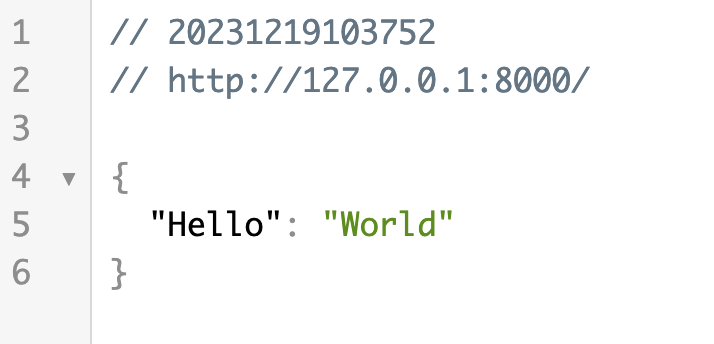

FastAPI Installation and Environment Setup
FastAPI requires Python 3.8 or higher. This section covers how to install FastAPI and configure the development environment.
Check Python version
Before installing FastAPI, verify your Python version:
$ python --version Python 3.11.0 # 或者 $ python3 --version Python 3.11.0
If your Python version is lower than 3.8, upgrade Python first.
Create virtual environment
It is recommended to install FastAPI in a virtual environment to avoid conflicts with system Python packages:
# 创建虚拟环境 $ python -m venv venv # 激活虚拟环境（macOS/Linux） $ source venv/bin/activate # 激活虚拟环境（Windows） $ venv\Scripts\activate
Virtual environments are a best practice in Python development. Using a separate virtual environment for each project avoids dependency conflicts between projects.
Install FastAPI
Install FastAPI using pip:
$ pip install fastapi
This command installs only the FastAPI core package. If you need to install FastAPI and all its optional dependencies at once, you can use:
$ pip install "fastapi[all]"
fastapi[all]The following components will be installed:
| Package name | Purpose |
|---|---|
uvicorn[standard] | ASGI server, used to run FastAPI applications |
python-multipart | Form data and file upload support |
jinja2 | HTML template engine |
python-jose[cryptography] | JWT token support |
passlib[bcrypt] | Password hashing and encryption |
python-dotenv | Environment variable management |
Install Uvicorn
FastAPI is an ASGI framework that requires an ASGI server to run. The most commonly used one is Uvicorn:
$ pip install "uvicorn[standard]"
[standard]This will install uvloop (a high-performance event loop) and httptools (a high-performance HTTP parser), significantly improving performance.
ASGI (Asynchronous Server Gateway Interface) is the standard interface between Python asynchronous web servers and applications, and is the asynchronous version of WSGI. Traditional frameworks such as Flask use WSGI (synchronous), while FastAPI uses ASGI (asynchronous), enabling more efficient handling of concurrent requests.
Run your first FastAPI application
After installation, create a file namedmain.pyFile:
Example
# Create FastAPI application instance
app = FastAPI()
# Define the GET route for the root path
@app.get("/")
async def root():
return {"message": "Hello World"}
Start the application in the command line:
$ uvicorn main:app --reload
Parameter description:
| Parameter | Description |
|---|---|
main:app | mainRefers to the file name main.py,appRefers to the FastAPI instance variable name created in the file |
--reload | Development mode: automatically reloads the server after code changes (for development environment only) |
After successful startup, the terminal will display:
INFO: Uvicorn running on http://127.0.0.1:8000 (Press CTRL+C to quit) INFO: Started reloader process INFO: Started server process INFO: Waiting for application startup. INFO: Application startup complete.
Open browser to accesshttp://127.0.0.1:8000, you will see the following JSON response:
{"message": "Hello World"}

Meanwhile, FastAPI automatically generates interactive API documentation:
| Address | Document type | Description |
|---|---|---|
| http://127.0.0.1:8000/docs | Swagger UI | A documentation interface for interactively testing the API |
| http://127.0.0.1:8000/redoc | ReDoc | A documentation interface that focuses more on reading experience |
Using FastAPI CLI
The new version of FastAPI providesfastapiA command-line tool that makes it more convenient to run applications:
# 开发模式（自动重载） $ fastapi dev # 生产模式 $ fastapi run
fastapi devIt will automatically find FastAPI applications in the project and start the development server, equivalent touvicorn main:app --reload。
Recommended development tools
| Tools | Description |
|---|---|
| VS Code | Free and lightweight, offering an excellent FastAPI development experience with the Python and Pylance extensions |
| PyCharm | A professional Python IDE with built-in FastAPI project templates and powerful debugging features |
| Alibaba Qoder | An AI programming IDE launched by Alibaba, deeply customized based on VS Code |
| ByteDance Trae | An AI-driven development tool launched by ByteDance, with built-in Python support |
It is recommended to use VS Code + Python extension, which has the best support for FastAPI type annotations and auto-completion, and is completely free.other extensions